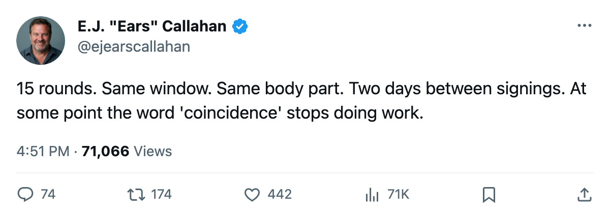
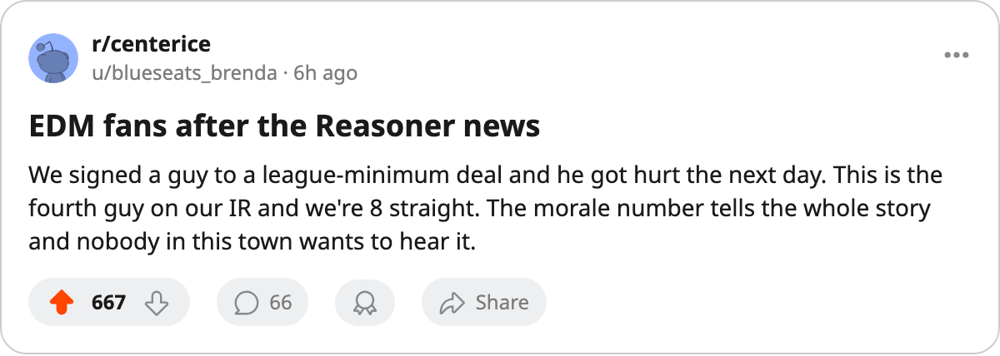

Sign-and-Injure, Round 15: 2 Signed in 2 Days, Both in the Same 4-Day IR Window
EDM took Reasoner on Jan 4. DAL took Varada on Jan 2. Both leg injuries, both onset windows Jan 5-8, both out past the signing date.
 E.J. "Ears" CallahanInsider · The Hot Stove
E.J. "Ears" CallahanInsider · The Hot Stove
 Marty Reasoner69 signed with
Marty Reasoner69 signed with  Edmonton Oilers on Jan 4. The league puts his leg injury onset between Jan 5 and Jan 8. He returns Jan 18.
Edmonton Oilers on Jan 4. The league puts his leg injury onset between Jan 5 and Jan 8. He returns Jan 18.
Vaclav Varada73 signed with  Dallas Stars on Jan 2. The league puts his leg injury onset between Jan 5 and Jan 8. He returns Feb 13.
Dallas Stars on Jan 2. The league puts his leg injury onset between Jan 5 and Jan 8. He returns Feb 13.
Two signings, 2 days apart, the same body part, the same 4-day onset window. This is Round 15 of the sign-and-injure pattern the desk has tracked since December, and the first time this season that two filings landed inside a single window with the same injury designation.
The gap keeps closing
Round 11 (Dec 1): 4 onsets, 1 filing day, 1 window. Round 12 (Dec 11): 8 of 9 signings hit IR in the same 3-day span. Round 13 (Dec 15): 7 of 8 in the same window. Round 14 (Dec 22): 4 filed Dec 17-18, 4 on IR.
In Round 14, Deron Quint75's onset window started Dec 17, one day before  Chicago Blackhawks filed his signing. Round 15 runs the same 1-day gap in the other direction: the signing first, the onset window a day later. Varada's window opens 3 days after his contract.
Chicago Blackhawks filed his signing. Round 15 runs the same 1-day gap in the other direction: the signing first, the onset window a day later. Varada's window opens 3 days after his contract.
Neither club had a visible need
EDM carries the league's lowest payroll at $42.95M, sits on an 8-game slide with 35 points in 41 games, and has the lowest club morale average in the league at 87.1. Reasoner, a 75-overall center at $283,390, is now the 4th man on EDM's injured list.
DAL carries $58.02M at $0.97M per point, holds 5 picks including 1 first-rounder, and sits at 60 points. Varada, a 73-overall winger at $468,040, is out 39 days. He was not a player that club was missing.
The onset windows do not prove the men were hurt before ink hit paper. "Between Jan 5 and Jan 8" is as precise as the league gets. But when a signing and an injury designation land in the same 72-hour span, 15 rounds in one season, the desk reads it as method rather than misfortune.
Seventy days to the trade deadline. The desk expects Round 16 before it.

